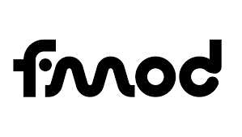
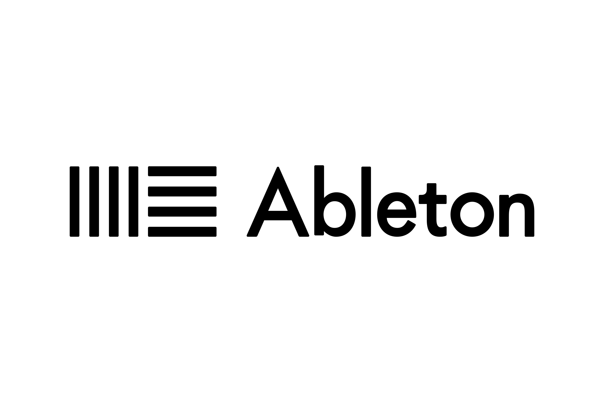

BLOG
Notes on my process — how each project came together, what I learned, and what I'd do differently.

VIRAL IMPACT — Sound for a Serious Game
How I composed, designed and implemented the audio for a client project made for 's Heeren Loo, using Ableton, Unity, and FMOD.
Read post →CANYON RACER — Adaptive Engine Sound
Building layered, parameter-driven engine sounds and synth-driven combat SFX for a futuristic mobile racer in FMOD + Unity.
Read post →VERTIGATO — Spatial Audio for VR
How I designed grounding, spatial audio for a VR experience built to introduce first-time users to Saxion CMGT.
Read post →
SKIDDLY — Sound for Kids (8–15)
Designing warm, non-fatiguing SFX for an educational mobile game about sustainable development — and what changes when your players are children.
Read post →MÜNSTER PROMO — Sound + On-Camera
Six months of sound design and on-camera work for a tourism film spotlighting the corners of Münster that travel guides miss.
Read post →MOOD COMPOSITION STUDY — Three Moods
A self-directed exercise: three short pieces in three contrasting moods to practice writing on-brief for tone and emotion.
Read post →